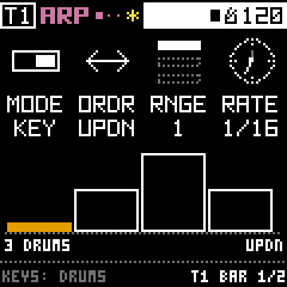
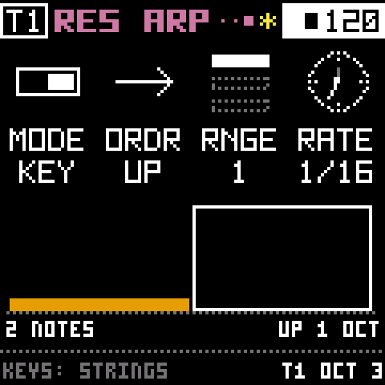

01Overview
Bryo turns the M-VAVE FM-1 into a four-track instrument for sculpting sound. Each track starts with a source: a tape loop, a synth, a sampler or a drum machine. The sound then goes through four effects, always in this order: GRAIN, RESONATOR, COLOR, SPACE. Each track also has four modulators that can move any knob, and an arpeggiator that plays the keys you hold.
There are no menus. You hold a pad and turn a knob. I made it this way because a menu is where an idea goes to wait. If the four knobs always change the four values on the screen, your hands never have to stop and go looking for something.
Phases 1 to 9 of 10 are built, and it has run on a real FM-1 since 2026-10-10. Testing on the hardware is under way. bryo-status.md has the details.
02Install
There's no Bryo release yet, so for now you build it yourself. Bryo keeps Felucca's update loader exactly as it was. That means installing Bryo works the same way as installing Felucca, and you can always put the FM-1 back the way it was.
1. Build the package
The build needs JieLi's toolchain, which runs on Linux x86-64 (on a Mac it runs in a linux/amd64 container), and three files from the AC79 SDK. BUILDING.md walks through the setup. Once that's done:
git clone https://github.com/thoughtgrain/moss-and-air.git
cd moss-and-air/bryo
tools/get_toolchain.sh # installs to ~/.jieli/toolchain
./build.sh # makes build/bryo.fwsc2. Install from the command line
The installer talks to the FM-1 over MIDI, so it needs two Python packages.
pip3 install mido python-rtmidi
python3 tools/fm1_install.py --info # check which FM-1 is connected
python3 tools/fm1_install.py build/bryo.fwscOr use the web installer
Browsers only allow Web MIDI on a secure page, so serve a copy of the installer from localhost and open it in Chrome or Edge:
python3 web/make_site.py build/bryo.fwsc dev /tmp/bryo-site
cd /tmp/bryo-site && python3 -m http.server 8000
# open http://localhost:8000/webapp/installer/Installing firmware is at your own risk. If an install fails and the FM-1 won't start, FM-1-transporter can recover it. To go back to the stock firmware, use M-VAVE's updater. Bryo's projects and tapes won't open there.
03The panel

- Top left: MASTER (volume), SELECT (tempo), PRESETS (projects and presets), ALGORITHM (what REC records). Under them, OCT− and OCT+.
- Top right: KNOB 1 to 4. They always change the four values on the screen.
- Blue pads, the pages: HOME (the track's source), EDIT (GRAIN, RESONATOR), FX (COLOR, SPACE), GLO (the mixer).
- Purple pads, what moves: LFO holds modulators M1 to M3, SEQ is M4 (a step sequencer), ENV is the source's own envelope, and ARP is the arpeggiator.
- Green pads, the transport: PLAY and REC. SAVE saves, and holding it undoes. Holding SCL resets things.
- Keys: the 16 white keys play the track. The 11 black keys above them mute tracks, flip the tape, clear things and freeze GRAIN.
04Reading the screen
Along the top you'll see the track (T1 to T4), the page's name with a dot for each of its pages, then the transport (■ stopped, ▶ playing, ● recording) and the tempo. A ✱ means you have changes you haven't saved yet.
Below that are the four knobs. Each one is a little picture, a four-letter name and a value. The picture shows the value too: a dial points, a fader fills. The knob you turned last has its name inverted, so you can find your place.
The screen is white on black, and colour only tells you two things: where you are, and what's making sound. A shape or a word always says the same thing, so you never need to tell the colours apart.
| Colour | Means |
|---|---|
| Blue | A page of the blue pads (HOME, EDIT, FX, GLO) |
| Purple | A modulator's or the arpeggiator's page, or a knob a modulator moves |
| Orange | Sound happening now: grains, strings, echoes, the playhead, the note playing |
| Red | Recording, or the CPU close to its limit |
| Yellow | Something to know: not saved, FROZEN, grains HELD |
05First sounds
- Turn it on. BRYO shows for a moment, then you're on track 1's TAPE page. Don't hold OCT− and OCT+ while it starts, or you'll land in calibration.
- Press PLAY. You'll hear the factory scene: a drum machine that changes its own pattern, FM bells played by the arpeggiator, a drone ringing through the strings, and plucks bouncing into an echo. It's all in A minor.
- Turn SELECT for the tempo (40 to 240 BPM) and MASTER for the volume. Both work on every page.
- Press the black keys OP1 to OP4 to mute and unmute tracks 1 to 4.
- Hold GLO and press white key 2 to move to track 2. Almost everything you do changes the track you're on.
06Pages and modulation
Every pad opens a page. Press the same pad again and you get its next page, and after the last one it goes back to the first. To jump straight to a page, hold its pad and press a white key. While you hold the pad, one key lights up for each page.
| Pad | Pages, in order |
|---|---|
| HOME | The source's pages (TAPE 4, SYNTH 5, POLY 4, DRUM 4). Hold it and turn SELECT to change the source. |
| EDIT | GRAIN 1 to 6, then RESONATOR 1 to 3 |
| FX | COLOR 1 to 3, then SPACE 1 to 4 |
| ENV | The source's envelope (on DRUM, its KIT) |
| LFO, SEQ | A modulator's pages (LFO: M1, M2 or M3; SEQ: M4) |
| ARP | The arpeggiator's 2 pages, then RES ARP |
| GLO | The mixer. EDIT then steps through CHANNEL, MASTER, KEY and SETUP. |
Make a knob move
Hold LFO or SEQ and turn any knob on a source, effect or channel page. How far you turn sets how far that modulator moves the knob, from −100 to 100 %. The knob gets a purple mark so you can see it's moving.
The LFO pad holds three modulators. Hold LFO and press OP1, OP2 or OP3 to pick which one it shows. Hold LFO and turn SELECT to change what it is: an LFO, an ADSR envelope or an envelope follower. The knobs it moves stay the same. SEQ is always the step sequencer.

07Arpeggiators
The arpeggiator plays the keys you hold one at a time, in time with the tempo. Every track has one, and it adapts to the source:
- SYNTH and POLY: it plays notes.
- TAPE: it steps through the slices you hold.
- DRUM: it walks through the drums you hold. Hold kick, snare and hat with UPDN and you get kick, snare, hat, snare, kick.
Try it
- Press ARP.
- Turn KNOB 1 (MODE) to KEY.
- Hold a chord on the white keys. You'll hear its notes one after another, a sixteenth note each. On the screen, the bars are the pattern and the filled one is playing.
| Knob | What it does |
|---|---|
| MODE | OFF. KEY plays while you hold keys. LTCH keeps the last chord playing after you let go; press a new chord to replace it. ADD keeps every key you press, so the pattern grows one note at a time. |
| ORDR | UP, DOWN, UPDN (up and back down), RND (random) or PLAY (the order you pressed them) |
| RNGE | 1, 2 or 3 octaves: the notes, then the same notes an octave up, and so on. On TAPE and DRUM it stays at 1, since a slice or a drum has no octave. |
| RATE | How long each step lasts: 1/4, 1/8, 8T, 1/16, 16T or 1/32 (T means triplet) |
| GATE (page 2) | How much of each step the note sounds, from short and plucky to long |
| SWNG (page 2) | Pushes every other step a little late |
Grow a pattern
Set MODE to ADD and press keys one at a time. Each one joins the pattern and stays there. When you want to start over, hold the black POLY key on the ARP page to clear it.



RES ARP: an arpeggio for the strings
Press ARP a third time, or hold ARP and press white key 3. This is RESONATOR's own arpeggiator, separate from the track's. Each step plucks RESONATOR's four strings at a new note, whatever the track itself is playing.
- MODE turns it on (OFF, KEY, LTCH, ADD). ORDR, RNGE and RATE work the same as above.
- With MODE on, the white keys on this page set the strings' pattern and the track stays quiet. With MODE off, they play the track as usual.
- Turn RESONATOR's WET up to hear it (EDIT seven times, then KNOB 4).
- A latched or piled-up pattern keeps plucking after you leave the page. Hold POLY here to clear it.

How they follow the transport
Keys you hold play right away, whether the transport is running or not. A latched or piled-up pattern keeps going when you switch to another track. STOP quiets it and keeps the notes, and PLAY starts it again from the top. Each track has its own, and saving a project keeps the notes it holds.
Manual 5.8 >08Recording
REC records onto the track you're on. On a TAPE track it records the other three playing. That's how you bounce a scene down and keep building on it. ALGORITHM changes what each track's REC listens to: AUTO, the others, one track, or itself.
- Pick track 2 (hold GLO and press white key 2).
- Hold the black POLY key for half a second to clear its tape. The screen warns you first, and if you let go early nothing happens.
- Press PLAY, then REC. The header shows ● and the tape grows as it records.
- Press REC again after 10 to 15 seconds. Track 2 now loops what the others played.
For drum loops, hold REC and turn SELECT to record an exact number of bars. Cleared something by mistake? Hold SAVE to bring it back.
Manual 4 >09Saving and undo
- Nothing is kept until you tap SAVE. It saves everything (every knob, source, pattern, modulation, arpeggio, the mixer and the tempo) into the current project, P1 to start with. A tape you recorded goes into a user reel named after it, like
P1T2. - Hold SAVE to undo the last clear, reset or load.
- Turn PRESETS to see the six project slots. OCT+ loads one, SAVE saves into it, holding POLY deletes it, and OCT− leaves. Pick an empty slot and press OCT+ to start a blank project. Past P6, FACTORY brings back the factory scene.
- Track presets (A to H, plus eight factory ones) keep one track's sound. Turn PRESETS, then press EDIT.
Saving while it plays doesn't stop the sound. If there's a new recording to write, the sound fades out for a moment and back in. Bryo prepares the next save during a quiet moment, so a save in the middle of a set stays short.
Manual 9 >10With a computer
Files
Plug the FM-1 into a computer and it shows up as a small drive called BRYO.
TAPE1.WAVtoTAPE4.WAVare what each track plays. Copy them off to keep them.- Copy a WAV on and name it
TAPE2.WAVto replace track 2's tape. - A WAV with any other name becomes one of six user reels (up to 21.5 s).
- Eject and plug back in to see new files. Deleting a file on the computer doesn't delete the sound; you do that on the REELS page.
Record what the computer plays
With the transport stopped, hold REC for a second. Set Bryo as the computer's sound output, then press REC to start a take and REC again to stop it (up to 23.6 s). Trim it with STRT and LEN, set GAIN and FADE, pick a track with white keys 1 to 4, and press REC to keep it. HOME takes you back a step.
Manual 10 >11When something goes wrong

- A red BRYO CRASH screen: it restarts on its own after 4 seconds. Anything you hadn't saved is gone, but saved projects, reels and settings are safe. If it freezes instead, it restarts after 8 seconds. If it crashes twice within 30 seconds of turning on, it starts in update mode so you can reinstall it.
- UPDATE MODE IN 3…: you're holding OCT− and OCT+ together. Five seconds puts it in update mode. Let go to cancel.
- A calibration screen: OCT− and OCT+ were held while it turned on. Follow the screen, or turn it off and on again.
If you hit a crash, please write down what you were doing and open an issue. That's the quickest way for me to find the bug.
Manual 11 >12Quick reference
| Do this | To |
|---|---|
| PLAY | Start or stop |
| SELECT | Tempo |
| MASTER | Volume |
| GLO held + white key 1 to 4 | Pick a track |
| GLO held + KNOB 1 to 4 | Track levels |
| GLO held + SELECT | How many tracks are on |
| GLO tapped, then EDIT | CHANNEL, MASTER, KEY, SETUP |
| OP1 to OP4 | Mute tracks |
| OP5 / OP6 | Tape backwards / half speed |
| HOME | The source's pages |
| HOME held + SELECT | Change the source |
| EDIT | GRAIN, then RESONATOR |
| FX | COLOR, then SPACE |
| ENV | The source's envelope page |
| LFO / SEQ tapped | That modulator's pages |
| LFO / SEQ held + a knob | How much that modulator moves the knob |
| LFO held + OP1 / OP2 / OP3 | Which modulator LFO shows: M1, M2, M3 |
| LFO held + SELECT | What the modulator is: LFO, ADSR or FOLLOW |
| ARP | The arpeggiator; its third page is RES ARP |
| ARP page, black POLY held | Clear the arpeggio's notes |
| GLO held + OCT+ | Black keys: shortcuts or notes |
| REC | Record onto the track |
| REC held 1 s, stopped | Record the computer |
| ALGORITHM | What REC records |
| Black POLY held | Clear the tape (on DRUM, the pattern) |
| Black MONO held | Clear the track's modulation |
| Black 0 | Freeze GRAIN (hold it, or tap to latch) |
| SCL held + a knob | That knob back to its default |
| SCL held + the lit pad | The whole page back to its defaults |
| SAVE | Save the project |
| SAVE held | Undo the last clear, reset or load |
| PRESETS | Projects; EDIT for track presets, again for reels |
| OCT− / OCT+ | Octave (on DRUM, the bar) |
Every control, in every situation, is listed in controls.tsv, and a test checks that list against the code.
13Building and testing
You don't need the device toolchain to work on Bryo. The host tests build the whole sound chain, the controls and the screens with any C compiler, then check every screen against its pixel fingerprint. The pictures on this site come from those tests.
pip3 install Pillow fonttools
cd bryo
tests/run_tests.sh # should end with "ALL HOST TESTS PASSED"To see what each modulation target costs (needs numpy, and valgrind for --cost):
sh tests/mod_audit.sh --costbryo-architecture.md explains how each part is built. If you'd like to help, start with CONTRIBUTING.md.
14Credits and licence
Bryo is a fork of Felucca, the open firmware for the FM-1 by Leo Kuroshita (@kurogedelic) and Hügelton Instruments. They worked out how the FM-1 works and wrote the firmware Bryo still stands on: the hardware layer, the update loader, USB, storage, the display and the installer. Thank you, Leo.
Felucca credits DaisySP and Rings (Electrosmith, Emilie Gillet), msfa (Google, Pascal Gauthier, via Dexed), klattsch (Tony Gies), the Inter Tight font (The Inter Project Authors), the Fukiai icon font (Hügelton), the VSCO-2 CE and VCSL sample libraries (Versilian Studios) and three files from the JieLi AC79 SDK. Those credits carry through to Bryo.
Bryo is GPL-3.0-only, like Felucca. If you share it, or firmware built from it, share the complete source with it too. The details are in LICENSE, LICENSING.md and NOTICE.md.